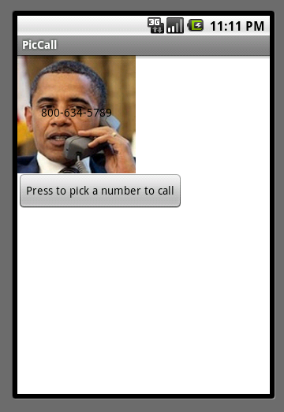

PicCall
PicCall shows how you can use App Inventor to make apps that do actual phone things, like calling friends.
This tutorial assumes that you have completed the Set Up process.Before starting
To run PicCall , your phone must be set up and activated for making phone calls. If it isn't, you can still build PicCall for practice, but the phone won't actually make the calls.
Warning: PicCall does not work on all Android phones in the current implementation of App Inventor: you'll get an error notice on some phones when you try to pick a phone number. Also, you won't see all your contacts — only those created from Gmail. These limitations will be removed in the future.In this tutorial, unlike HelloPurr , you'll give names to components, rather than just using the default names that App Inventor provides (like "Button1"). Using meaningful names is good programming practice: it helps you keep your programs straight in your own mind, and it helps others understand your programs.
Your phone should also contain a few contacts with pictures. You can use the Contacts app to save pictures for your contacts. You can also click on Contacts in your Gmail account on your computer and add pictures there.
Make sure your computer and your phone are set up to use App Inventor, and browse to the App Inventor Web site at http://appinventor.mit.edu . Start a new project in the Designer window. Name it PicCall and change the screen Title to PicCall . Open the Blocks Editor, click Connect to Phone , and check that the phone has started the App Inventor app.Getting started
Start out just like in HelloPurr by placing a button on the screen. Make the button 150 pixels wide and 150 pixels high. Set button's Image to a picture. You may as well use the picture of the kitty if it's handy — you'll be changing the picture soon. Set the Text of the button to "Press to Call", although you'll be changing that soon, as well.
Change the name of the Button component to TopButton (You'll make a BottomButton later in the tutorial.) To change a component's name , click the Rename button in the Components panel and enter the new name.In this tutorial, unlike HelloPurr , you'll give names to components, rather than just using the default names that App Inventor provides (like "Button1"). Using meaningful names is good programming practice: it helps you keep your programs straight in your own mind, and it helps others understand your programs. Don't confuse the name of a component with the text of a component. The text is what appears on the screen. The name is the name your program uses to refer to the component. You'll see the name in the Components structure list in the Designer and on the drawers in the Blocks editor.
Making phone calls
In HelloPurr , you made the phone play a sound when the button was clicked. PicCall in almost the same, except that instead of playing a sound, the phone makes a call.
App Inventor's PhoneCall component makes phone calls. You can find PhoneCall in the Social section of the Palette . Open that section and drag out a PhoneCall into the viewer. It will go into the Non-visible components area. Name it TopCall . The PhoneCall 's PhoneNumber property determines the number to call. Set that to some 10-digit phone number you'd like to call. Here's how the Designer should look:Phone contact information
In addition to making phone calls, App Inventor apps can also get information from the phone's contact list. You do this with the PhoneNumberPicker component.
Pull out a PhoneNumberPicker component from the Social section of the Palette , place it under TopButton and rename it to TopPick . A PhoneNumberPicker a kind of button: when you press it, it brings up your phone contacts list and lets you pick someone. Change the name of the PhoneNumberPicker to TopPick , and change its Text to "Press to pick a number to call". Try it by pressing the picker on your phone: you should see your contacts come up, and you can pick one. Nothing will happen after you pick, because you haven't yet told the components to do anything. You'll do that next.Using the picker
Switch to the Blocks window and open the drawer for TopPick . Drag out the when TopPick.AfterPicking do block. This lets you define an event handler that says what to do after you've picked a number from your contacts.
Now open the TopCall drawer and drag out set TopCall.PhoneNumber to and fit it into the slot in the when TopPick.AfterPicking do block. Now drag out TopPick.PhoneNumber from the TopPick drawer and plug it into the empty socket. Here's how your event handler should look:
Pictures
If you have a picture stored with your contacts, you can make the button show that along with the phone number, rather than always using the picture of the kitty. To do this, add an command to the event handler, to set the Image property of TopButton to be the the Picture property of TopPick :
PhoneNumberPicker has two properties that are easy to confuse: Picture and Image . Picture is the picture associated with the contact that's picked. Image is the image of the PhoneNumberPicker component as it appears in the Designer and on the phone.
Enhancements
Here are some variations for you to try:
- Add a second button, BottomButton and a second PhoneNumberPicker, so that your app gives you the choice of two numbers.
- Add a label with instructions on how to use the app.
- Show the name of the person being called in addition to the phone number. Use an extra label to show the additional information.
Using PicCall
You can package PicCall and download it to the phone so you can use it when you're not connected to the computer. But there's a big limitation: Every time you restart PicCall , it starts fresh and does not remember what you picked last time. Later, we'll see how to use the TinyDB component to create apps that can remember information from one time to the next. Such information is called persistent data .
Review
Here are the key ideas covered in this tutorial:-
You can name components by means of the Rename button.
-
App Inventor has components that can use information stored on the phone. The PhoneNumberPicker can get phone numbers and pictures for your contacts, and PhoneCall can make calls.
Tip: The list that comes up when you run the phone number picker does not show the pictures associated with your contacts, on some Android systems. Even though the image isn't shown, the "Picture" property will still return a picture that will show up when you run the app, provided that the phone has a picture for that contact.